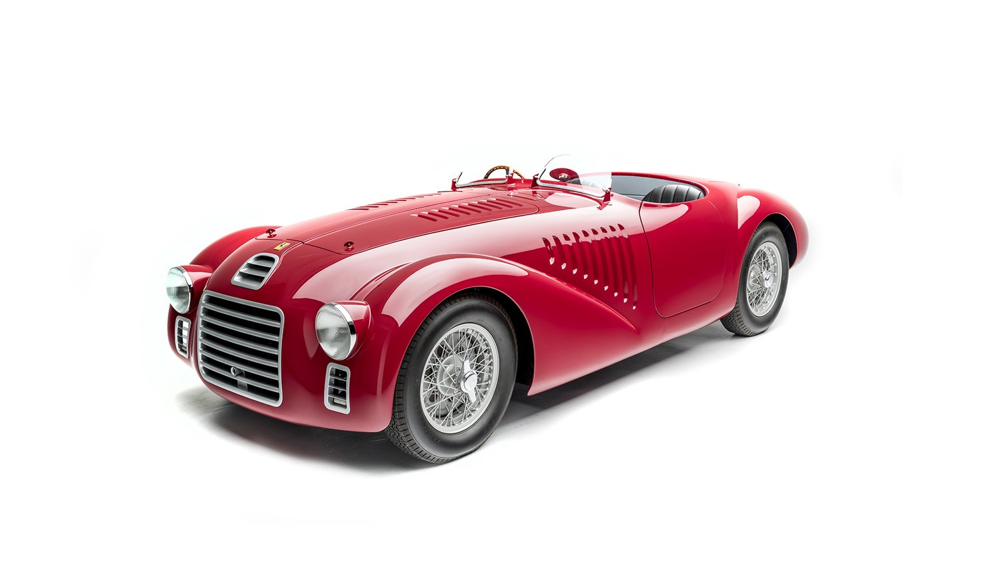
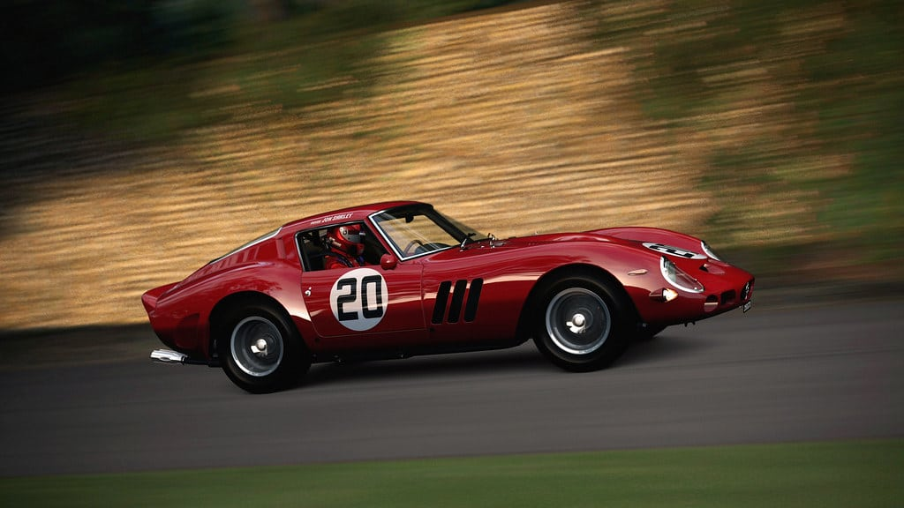
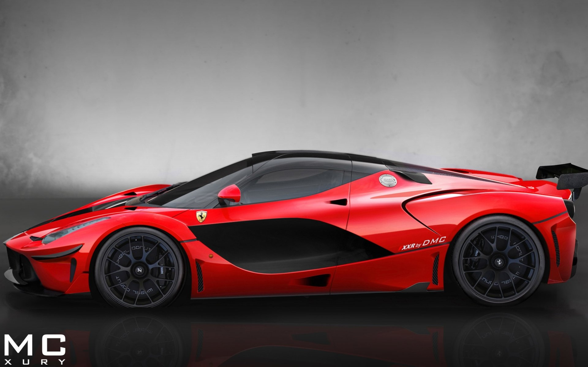

Ferrari Legacy
Ferrari’s legacy is a roaring symphony of speed, innovation, and Italian passion. Born from Enzo Ferrari’s dream in 1947, the brand rose to become synonymous with elite performance and motorsport dominance.
A Journey Through the Years
Birth of Ferrari
In 1947, Enzo Ferrari founded Ferrari. The iconic prancing horse was born, setting the stage for a legacy of passion and innovation.
The 250 GTO Era
The legendary 250 GTO set new standards in racing and design, becoming one of the most sought-after collector's items in automotive history.
LaFerrari Unleashed
LaFerrari redefined supercar performance with its hybrid technology and cutting-edge engineering, symbolizing the pinnacle of modern Ferrari innovation.
Discover More
Hover over each timeline item to get a closer look at Ferrari’s evolution and explore the passion behind every masterpiece.